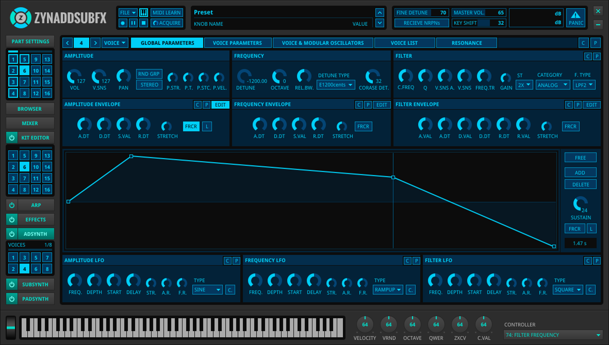

Building up from 2002 release, ZynAddSubFX was built to have a large
variety of features including the core synthesis features that are
familiar to current users.
This is when the core synthesis modules for
additive synthesis, subtractive synthesis,
and a novel pad synthesizer were formed.
You'd also see other familiar synth staples in the repertoire of
features such as ADSR/Custom envelopes, a wide variety of
filters, frequency modulation,
amplitude modulation, and others.
This combined with the microtonal aware engine and numerous effects
makes ZynAddSubFX a powerful synth.
Towards the tail end of this series ZynAddSubFX was available on
windows, linux, and osx.
Incremental Revitalization
After a lull in development from 2.2.1's last release in 2005, the
2.4.0 series resumed active development in 2009.
This series was the debut for legato mode
and additive synth unison.
The older configuration system was replaced with cmake which
integrated well with the runtime selectable MIDI and Audio driver
support.
Some initial work in plugin and session management was also performed at
this stage achieving DSSI and non session manager support.
Due to development limitations this series was nearly exclusively Linux
based.
Architecture & External Control
After the initial revitalization efforts, there were rather clear
architectural limitations created in the pre 2.4.x series. The 2.5.x
series was built to resolve these limitations and it has resulted in
major improvements in hard realtime performance.
The redesigned internals have resulted in a decoupled interface which
works via remote Open Sound Control (OSC).
This new interface has opened up the possibility of near ubiquitous
MIDI learn and increasing support for
realtime automations.
Support for a VST and LV2 plugin was added in this series.
This series is developed on Linux with support offered for OSX.
Workflow & Interfaces
A major limitation in past versions was the fltk based user
interface.
The navigation of the fltk UI is complex and parameter changes do
not have an obvious effect within the interface.
A complete rewrite of the user interface has begin using the OSC api
created in the 2.5.x series.
This series will result in a single window user interface uniting the
numerous views of the current UI.
Parameters will have associated data visualizations easily
available to help users understand how parameter changes should be
expected to change their instruments without consulting documentation.
This release is expected to support Windows, Linux, and OSX.

For more information on the 3.0.0 UI or the official return to windows
please sign up ...
Polish & Iteration On Feedback
While the 2.5.x changed the internals and the 3.0.x series radically
changed the interface, the 3.1.x series will be much more minor.
This release will focus on workflow changes based upon feedback
in both user surveys and public discussion on how people use the 3.0.x
series.
These incremental changes better parameter manipulation in terms of
direct units (Hz, cents, dB, ...), or changing how visualizations can be
interacted with.
Ideally sound manipulation should be fast, direct, and easy.
This series should clean up loose ends from the 3.0.x series to ensure
this is true and ZynAddSubFX should become by and large feature complete
in this series.
This release is expected to support Windows, Linux, and OSX.
For more detailed information on past releases see the
release news and for future releases see the
feature
tracker and optionally sign up
for information regarding the 3.0.0 release.